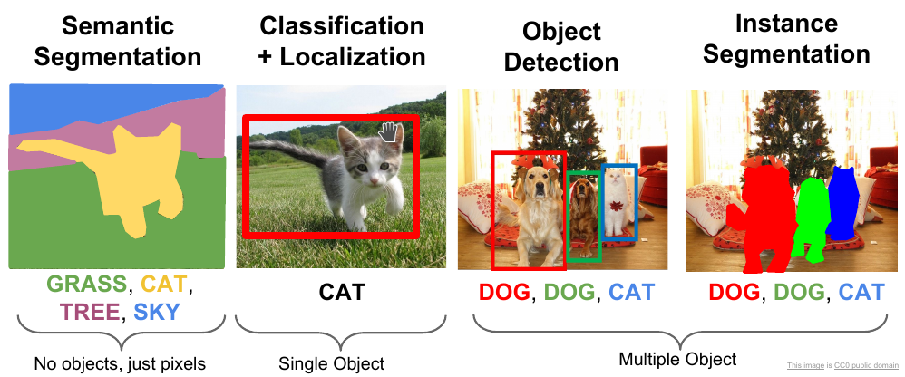
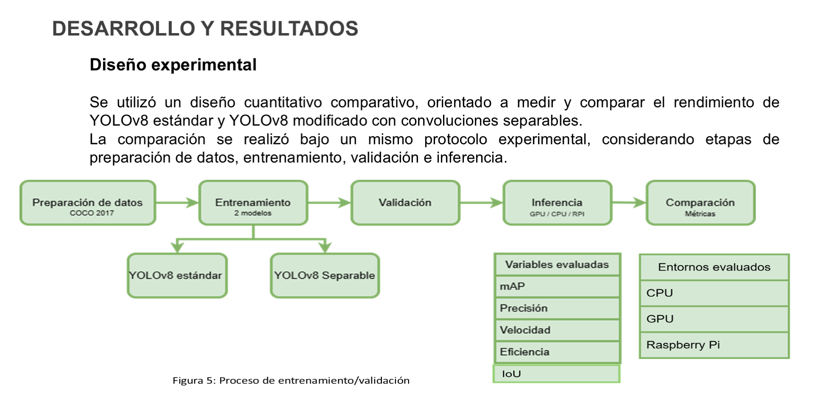
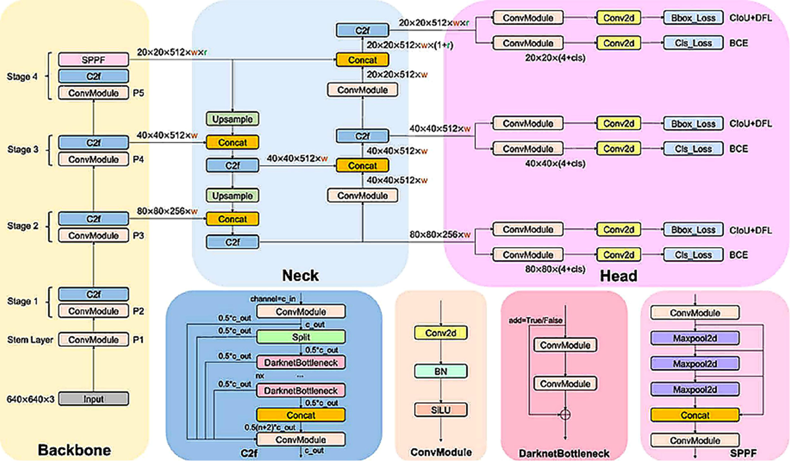
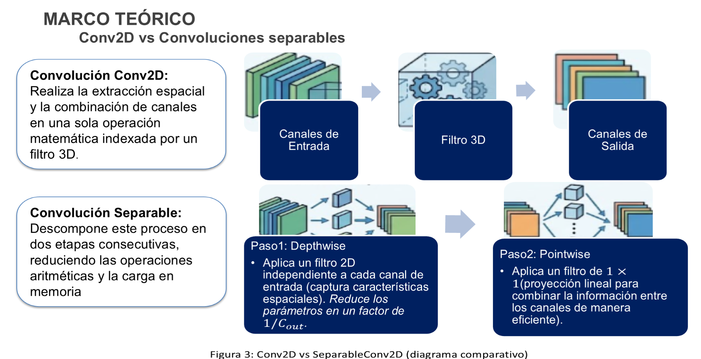
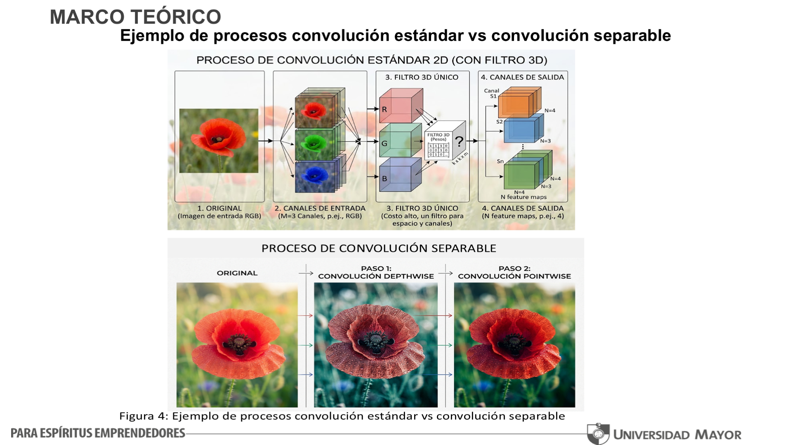
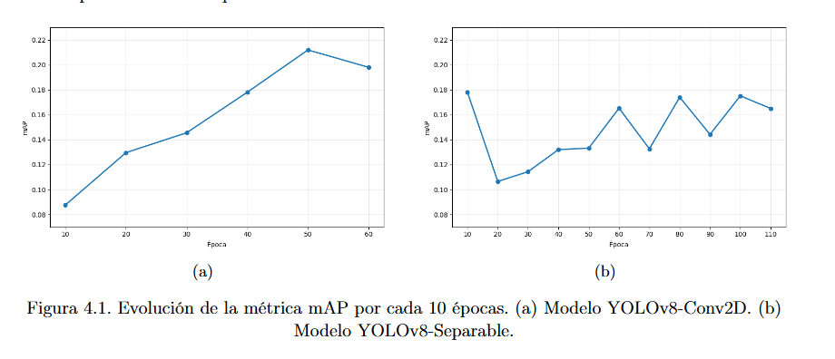
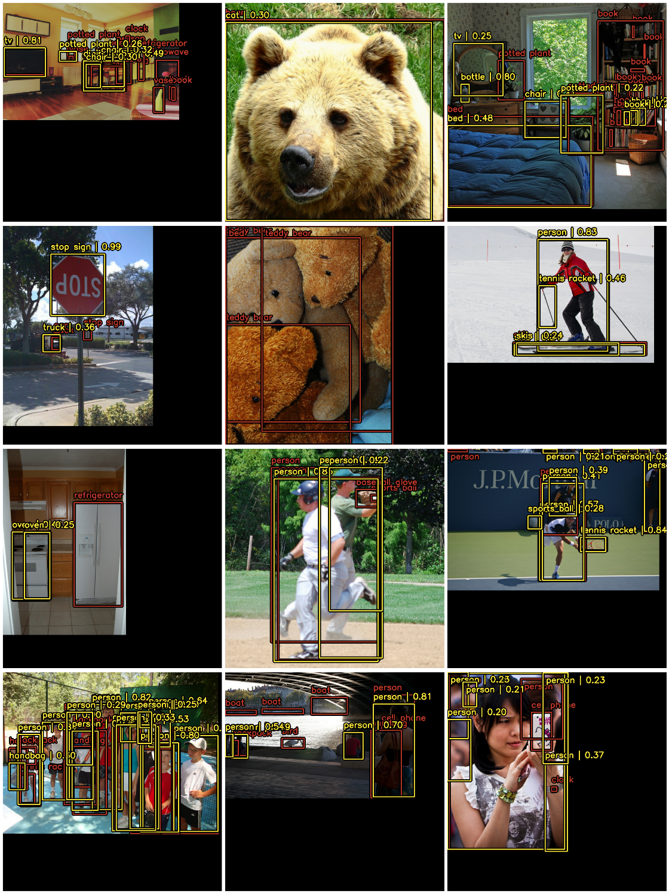
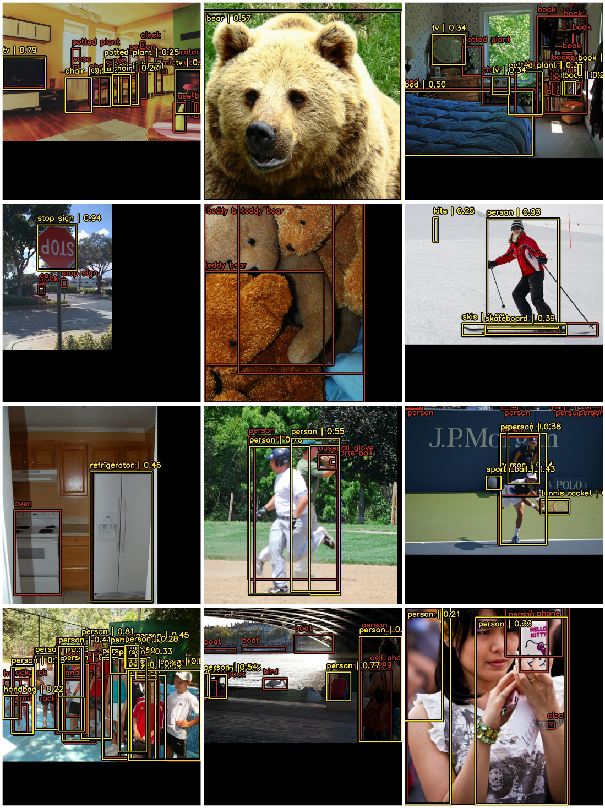

Engineering thesis · Universidad Mayor · April 2026
Two YOLOv8 detectors trained from scratch in TensorFlow/Keras on COCO2017 (118,287 training images, 5,000 validation).
Swapping Conv2D for SeparableConv2D costs 17% of mAP50 and changes almost nothing on a desktop,
but on a Raspberry Pi it is the difference between one frame every 14 seconds and one every 1.5.
An object detector looks at an image and returns a box and a label for every object it recognises: "person here, bicycle there". YOLO (You Only Look Once) does it in a single pass through a convolutional network, which is why it is the usual choice for real-time video: driver assistance, anti-collision systems, surveillance cameras, inspection on a production line.
The catch is cost. Most of the arithmetic in YOLO happens in convolution layers, and a model that runs smoothly on a gaming GPU can be unusable on a small, cheap, low-power board mounted on a vehicle or a camera, which is exactly where these systems need to live. This thesis asks a concrete question: if we replace YOLOv8's standard convolutions with a cheaper kind, how much accuracy do we lose and how much speed do we gain, and does the answer change with the hardware?

Conv2D and a modified one with SeparableConv2D.Deep learning models adapted to reduced hardware deliver more accuracy for the resources available than traditional models, measured on specific performance metrics (mAP, precision, speed, efficiency). The verdict is at the end of the page.
| Family | What it brought | What it costs |
|---|---|---|
| SIFT / HOG | Hand-crafted features, consistent in stable scenes | Break with lighting, rotation, clutter |
| AlexNet and CNNs (2012) | Features learned from data | Large datasets and compute |
| R-CNN family | Region proposals + classification | Multi-stage, slow |
| YOLO (2015 →) | Boxes and classes in one pass, real time | Weaker on small objects |
| SSD / FPN | Multi-scale detection | Lower accuracy in some scenes |
| Transformers (DETR) | Global context | Heavy to train and deploy |
Separable convolutions are the trick behind MobileNet and Xception and have been tried on YOLOv3-Lite, YOLOv5 variants and YOLOv7's ELAN blocks. YOLOv8 does not use them out of the box, which is the gap this work tests.
A standard 3×3 convolution that turns Cin input channels into Cout output channels learns one 3×3 filter for every input–output pair: 9 · Cin · Cout weights. It looks at space (the 3×3 neighbourhood) and at channels (colour, edges, textures…) at the same time.
A depthwise separable convolution splits that into two cheaper steps:
With 128 channels in and out, that is 147,456 weights for the standard layer against 17,536 for the separable one, about 8× fewer, with the same drop in multiplications. The price is expressiveness: the network can no longer learn arbitrary combinations of "where" and "which channel" in a single step. Applied to the Head of YOLOv8, the whole model goes from 3.99 M to 1.26 M parameters.
A quantitative comparative design: both models go through exactly the same pipeline, so any difference comes from the architecture, not from the data or the evaluation.

| Setting | Value |
|---|---|
| Dataset | COCO2017 (public benchmark) |
| Train / validation | 118,287 / 5,000 images |
| Classes | 80 |
| Input size | 640 × 640 × 3 |
| Annotations | Converted to YOLOv8 format, same preprocessing for both models |
| Framework | TensorFlow / Keras, implemented from scratch (no Ultralytics weights) |
| Epoch budget | Chosen by mAP checked every 10 epochs: 50 (Conv2D), 100 (Separable) |
| Deployment on the Pi | TensorFlow Lite |
Conv2D layers of the prediction Head with SeparableConv2D, leaving the feature extractor intact. Parameters drop from 3,991,584 to 1,258,715.The question was whether a lighter convolution buys enough speed to justify the accuracy it gives up. The answer depends entirely on the hardware:
| Metric | YOLOv8-Conv2D | YOLOv8-Separable |
|---|---|---|
| Training epochs | 50 | 100 |
| Parameters | 3,991,584 (15.2 MB) | 1,258,715 (4.8 MB) |
| mAP50 | 0.2119 | 0.1751 |
| Mean IoU | 0.8367 | 0.8302 |
| Precision | 0.6836 | 0.6734 |
| Recall | 0.3260 | 0.2933 |
| Inference, desktop CPU (FPS) | 2.34 | 2.41 |
| Inference, desktop GPU (FPS) | 5.48 | 5.36 |
| Inference, Raspberry Pi (FPS) | 0.07 | 0.68 |
| Time per image, CPU (s, mean ± sd) | 0.4273 ± 0.0207 | 0.4156 ± 0.0136 |
| Time per image, GPU (s, mean ± sd) | 0.1824 ± 0.0169 | 0.1866 ± 0.1671 |
| Time per image, Raspberry Pi (s, mean ± sd) | 13.9322 ± 1.5230 | 1.4754 ± 0.0142 |
Both models share data, input size (640×640), metrics and validation split; only the convolution type in the Head changes.
| Component | Desktop | Raspberry Pi 4 |
|---|---|---|
| Processor | Ryzen 7 5700X (8C/16T, 3.4 GHz) | BCM2711, ARM Cortex-A72 1.5 GHz |
| GPU | RTX 4060 Ti (8 GB GDDR6) | None (CPU with NEON SIMD) |
| RAM | 32 GB DDR4-3200 | 8 GB LPDDR4-2133 |
| Power | 65 W CPU + 160 W GPU | ≈ 7 W |
| Runtime | TensorFlow + CUDA | TensorFlow Lite |
A standard convolution filters space and channels at once. A depthwise separable one splits that into a per-channel spatial filter (depthwise) followed by a 1×1 channel mix (pointwise), the same idea behind MobileNet and Xception. Here the swap is applied to the prediction Head; the backbone is unchanged.



Each epoch over COCO2017, training plus validation, took 10–12 hours on the RTX 4060 Ti, so the epoch budget was chosen by checking mAP every 10 epochs. Conv2D peaks at epoch 50 and then degrades (overfitting). The separable model converges more slowly and noisily, settling around epoch 100.

Same validation images, ground truth in red and predictions in yellow. Conv2D keeps tighter, more stable boxes on small and medium objects; the separable model misses more of them, which is where its lower recall comes from.


Exporting to TensorFlow Lite was not a one-liner. DepthwiseConv2dNative is not among TFLite's built-in ops, so the export needed Select TF Ops, and the graph had to be restructured: pure inference was split from the label encoder and from non-maximum suppression, keeping only the layers needed for prediction. Part of the graph then runs as Flex ops that miss TFLite/XNNPACK optimizations. That hurts the heavier Conv2D graph most, which explains part of its slow and erratic latency on the Pi.
Partly confirmed. In absolute terms the adapted model is less accurate: 0.175 vs. 0.212 mAP50, and no amount of extra epochs closed the gap. Relative to the resources it uses, it wins clearly on the device it was designed for: on the Raspberry Pi it delivers 83% of the accuracy at roughly a tenth of the latency and a third of the size, while the standard model is not usable there at all (one frame every 14 s). On a desktop the trade-off does not exist, because the lighter model is not faster.
If the model runs on a desktop or server GPU, use Conv2D: you keep the accuracy and pay nothing in speed. If it runs on a CPU-only embedded device, use the separable variant: 17% less mAP50 buys a model that is about 10× faster, 3× smaller and has predictable latency, which matters as much as accuracy for anti-collision or continuous monitoring.